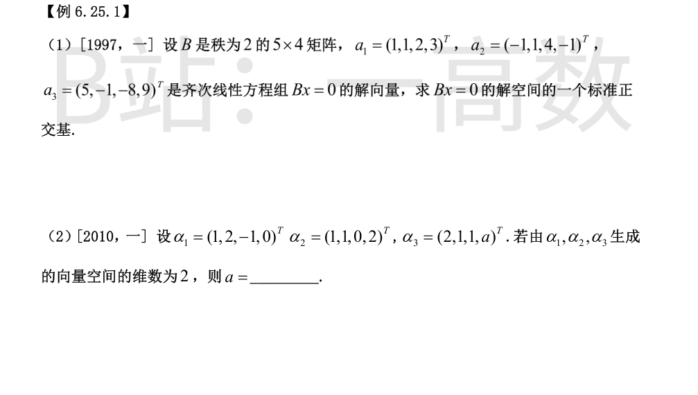
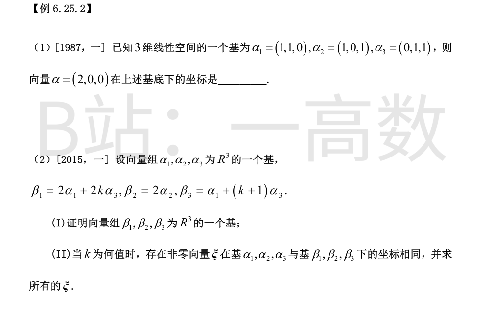
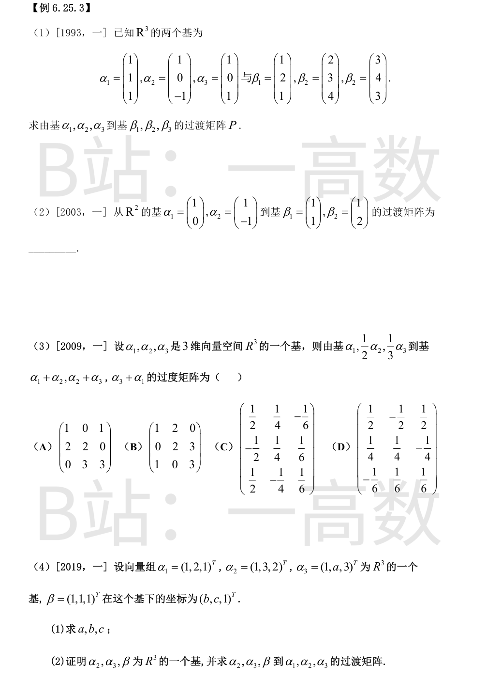
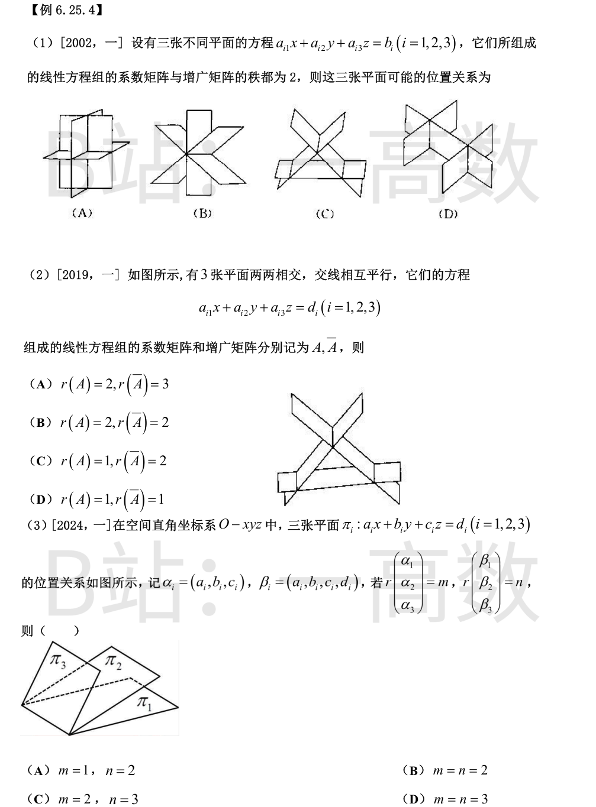
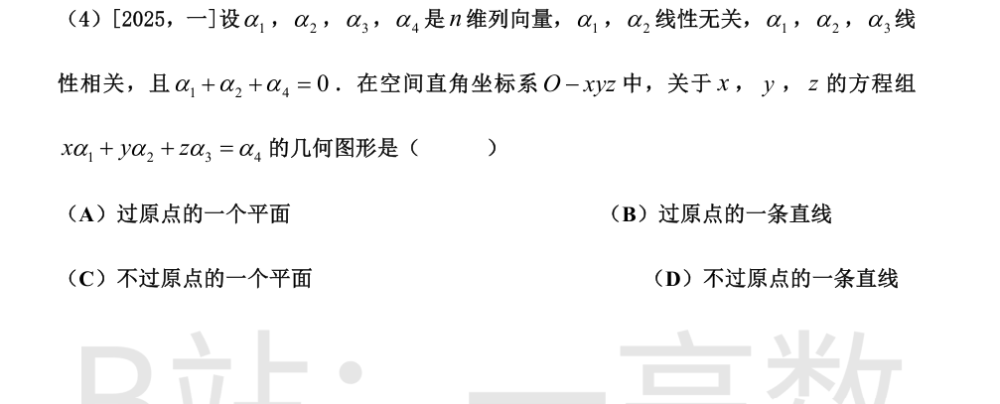
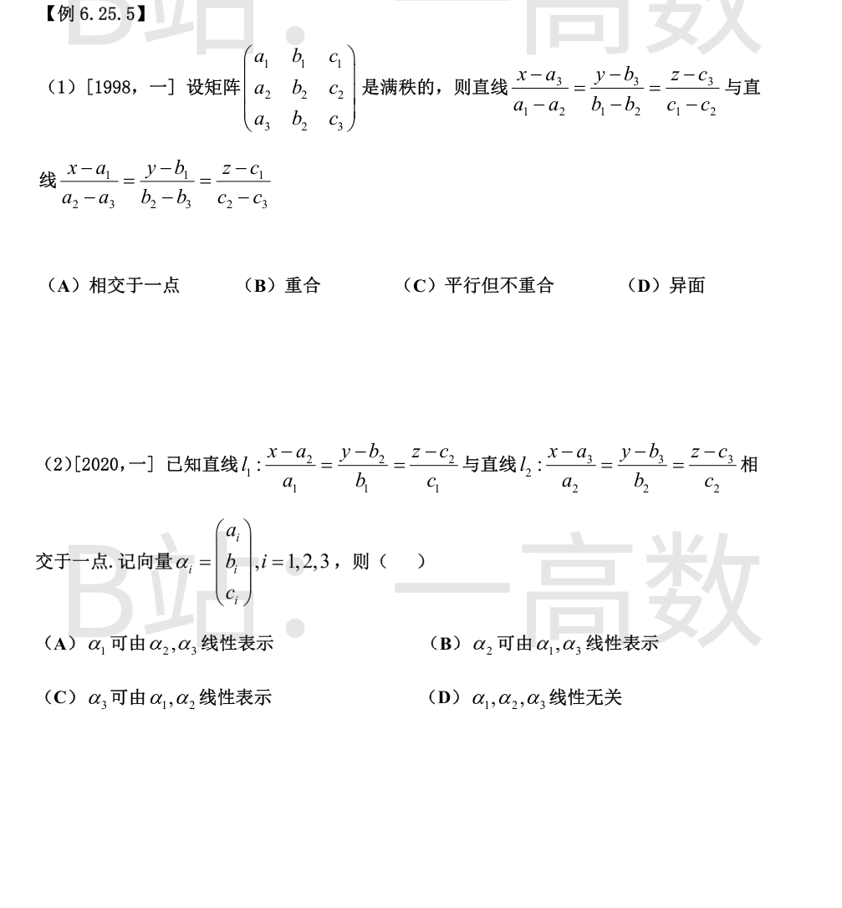
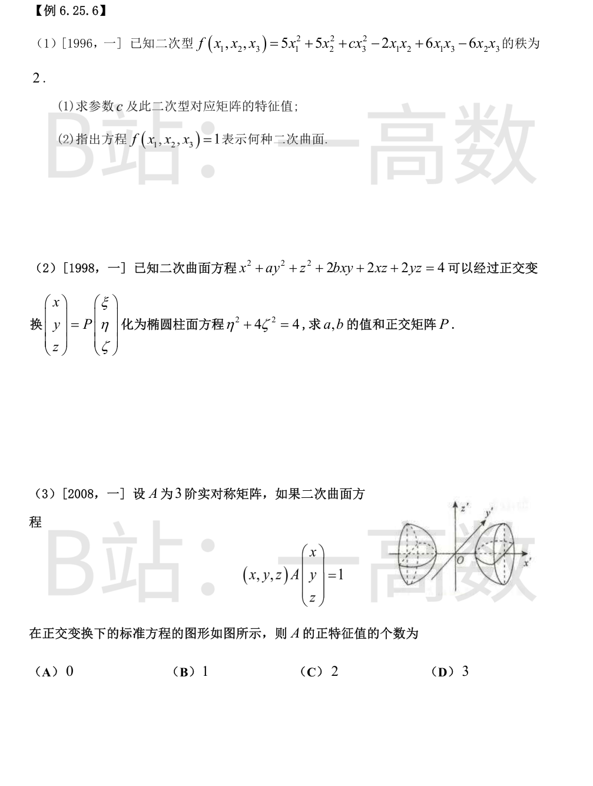

解空间维数 = n−r(B)=4−2=2。由 a3=2a1−3a2（验证 (2,2,4,6)−(−3,3,12,−3)=(5,−1,−8,9) ✓）知解空间由 a1,a2 张成。
Schmidt 正交化：β1=a1=(1,1,2,3)^{T}，(a2,β1)=−1+1+8−3=5，(β1,β1)=15，
$$\beta_2=a_2-\frac{5}{15}\beta_1=(-1,1,4,-1)^{T}-\frac13(1,1,2,3)^{T}=\frac13(-2,1,5,-3)^{T} .$$
单位化：‖β1‖=√15，‖(−2,1,5,−3)^{T}‖=√(4+1+25+9)=√39，
$$\eta_1=\frac{1}{\sqrt{15}}(1,1,2,3)^{T},\qquad \eta_2=\frac{1}{\sqrt{39}}(-2,1,5,-3)^{T} .$$
η1,η2 即解空间的一个标准正交基。
生成空间维数为 2 ⟺ r{α1,α2,α3}=2 ⟺ α3 可由 α1,α2 线性表示（α1,α2 显然无关）。
设 α3=c1α1+c2α2：第 3 分量 −c1=1 ⟹ c1=−1；第 1 分量 c1+c2=2 ⟹ c2=3；验证第 2 分量 2c1+c2=1 ✓。第 4 分量 0·c1+2c2=a ⟹ a=6。

设 α=x1α1+x2α2+x3α3，按分量：
$$x_1+x_2=2,\qquad x_1+x_3=0,\qquad x_2+x_3=0 .$$
后两式相减得 x1−x2=0，与第一式联立得 x1=x2=1，x3=−1。
坐标为 (1,1,−1)^{T}。验证：1·(1,1,0)+1·(1,0,1)−1·(0,1,1)=(2,0,0) ✓。
(I) (β1,β2,β3)=(α1,α2,α3)C，
$$C=\begin{pmatrix}2&0&1\\0&2&0\\2k&0&k+1\end{pmatrix},\qquad \det C=2\cdot\det\begin{pmatrix}2&1\\2k&k+1\end{pmatrix}=2\big[2(k+1)-2k\big]=4\neq0 .$$
故 β1,β2,β3 线性无关，为 R³ 的一个基。
(II) 设 ξ 在两组基下的坐标同为 x≠0：
$$(\alpha_1,\alpha_2,\alpha_3)x=(\beta_1,\beta_2,\beta_3)x=(\alpha_1,\alpha_2,\alpha_3)Cx\implies Cx=x,$$
即 (C−E)x=0。
$$C-E=\begin{pmatrix}1&0&1\\0&1&0\\2k&0&k\end{pmatrix},\qquad \det(C-E)=k-2k=-k .$$
有非零解 ⟺ k=0。此时方程为 x1+x3=0，x2=0，x=t(−1,0,1)^{T}，于是
$$\xi=(\alpha_1,\alpha_2,\alpha_3)\,t\begin{pmatrix}-1\\0\\1\end{pmatrix}=t(\alpha_3-\alpha_1),\qquad t\neq0 .$$

(β1,β2,β3)=(α1,α2,α3)P ⟹ P=A^{-1}B。
$$A=\begin{pmatrix}1&1&1\\1&0&0\\1&-1&1\end{pmatrix},\qquad A^{-1}=\begin{pmatrix}0&1&0\\1/2&0&-1/2\\1/2&-1&1/2\end{pmatrix},\qquad B=\begin{pmatrix}1&2&3\\2&3&4\\1&4&3\end{pmatrix}.$$
$$P=A^{-1}B=\begin{pmatrix}2&3&4\\0&-1&0\\-1&0&-1\end{pmatrix}.$$
验证：A(2,0,−1)^{T}=(1,2,1)^{T}=β1 ✓，A(3,−1,0)^{T}=(2,3,4)^{T}=β2 ✓，A(4,0,−1)^{T}=(3,4,3)^{T}=β3 ✓。
P=A^{-1}B，其中 A=[[1,1],[0,−1]]（det A=−1，A^{-1}=[[1,1],[0,−1]]），B=[[1,1],[1,2]]。
$$P=\begin{pmatrix}1&1\\0&-1\end{pmatrix}\begin{pmatrix}1&1\\1&2\end{pmatrix}=\begin{pmatrix}2&3\\-1&-2\end{pmatrix}.$$
验证：A(2,−1)^{T}=(1,1)^{T}=β1 ✓，A(3,−2)^{T}=(1,2)^{T}=β2 ✓。
过渡矩阵 C 的第 j 列是新基第 j 个向量在旧基 (α1, ½α2, ⅓α3) 下的坐标：
α1+α2 = 1·α1+2·(½α2)+0 ⟶ (1,2,0)^{T}；
α2+α3 = 0+2·(½α2)+3·(⅓α3) ⟶ (0,2,3)^{T}；
α3+α1 = 1·α1+0+3·(⅓α3) ⟶ (1,0,3)^{T}。
$$C=\begin{pmatrix}1&0&1\\2&2&0\\0&3&3\end{pmatrix},$$
与选项 (A) 完全一致，选 (A)。
(1) β=bα1+cα2+1·α3，按分量：
$$b+c+1=1,\qquad 2b+3c+a=1,\qquad b+2c+3=1 .$$
第一式 b+c=0，第三式 b+2c=−2 ⟹ c=−2，b=2；代入第二式 4−6+a=1 ⟹ a=3。
(2) a=3 时
$$\det[\alpha_2,\alpha_3,\beta]=\det\begin{pmatrix}1&1&1\\3&3&1\\2&3&1\end{pmatrix}=1(3-3)-1(3-2)+1(9-6)=2\neq0,$$
故 α2,α3,β 线性无关，为 R³ 的一个基。
过渡矩阵 T 满足 (α1,α2,α3)=(α2,α3,β)T，即 T=M^{-1}N：
$$M=\begin{pmatrix}1&1&1\\3&3&1\\2&3&1\end{pmatrix},\quad M^{-1}=\frac12\begin{pmatrix}0&2&-2\\-1&-1&2\\3&-1&0\end{pmatrix},\quad N=\begin{pmatrix}1&1&1\\2&3&3\\1&2&3\end{pmatrix}.$$
$$T=M^{-1}N=\begin{pmatrix}1&1&0\\-1/2&0&1\\1/2&0&0\end{pmatrix}.$$
验证：α2−½α3+½β=(1,2,1)^{T}=α1 ✓，列 2、列 3 分别给出 α2、α3 ✓。


r(A)=r(\bar A)=2<3 ⟹ 方程组有无穷多解，且解集维数为 3−2=1，是一条直线 L；三张不同平面都包含 L。反之，过同一条直线的三张不同平面，其系数矩阵与增广矩阵的秩均为 2。故位置关系为三平面交于一条公共直线，对应图 (A)。
两两相交 ⟹ 任两个法向量不共线 ⟹ r(A)≥2；若 r(A)=3，方程组有唯一解，三平面交于一点，与「三条交线互相平行（无公共点）」矛盾，故 r(A)=2。
三平面无公共点 ⟹ 方程组无解 ⟹ r(\bar A)>r(A)=2；而增广矩阵只有 3 行，r(\bar A)≤3，故 r(\bar A)=3。
选 (A)。
图中三平面两两相交 ⟹ 任两个法向量不共线 ⟹ m≥2；若 m=3 则方程组有唯一解，三平面过同一点，与图形不符，故 m=2。
三平面无公共点 ⟹ 方程组无解 ⟹ n>m=2，又 n≤3，故 n=3。
选 (C)。
卡点：本题为图形判读题，位置关系按图判读为三棱柱型（两两相交、三条交线互相平行、无公共点），与 2019 年真题同型。
由 α1,α2 无关而 α1,α2,α3 相关 ⟹ α3=pα1+qα2（(p,q)≠(0,0)）；由 α1+α2+α4=0 得 α4=−α1−α2（≠0，否则 α1,α2 相关）。
方程组化为 (x+pz)α1+(y+qz)α2=−α1−α2，由 α1,α2 无关比较系数：
$$x+pz=-1,\qquad y+qz=-1,\qquad z\ \text{任意} .$$
解集 {(−1−pz, −1−qz, z)} = (−1,−1,0)+z(−p,−q,1) 是一条直线。
检验原点 (0,0,0)：代入 x+pz=−1 得 0=−1 不成立，故直线不经过原点。
选 (D)。

记 v_i=(a_i,b_i,c_i)^{T}，满秩 ⟺ v_1,v_2,v_3 线性无关。
第一条直线 L1 过点 v_3、方向 d_1=v_1−v_2；第二条 L2 过点 v_1、方向 d_2=v_2−v_3。
若 d_1∥d_2，则 v_1−v_2=k(v_2−v_3)，即 v_1−(1+k)v_2+kv_3=0，与线性无关矛盾，故两直线不平行、更不重合。
又 v_1−v_3=(v_1−v_2)+(v_2−v_3)=d_1+d_2，即连接 L1 上点 v_3 与 L2 上点 v_1 的向量可由两方向向量线性表示，两直线共面。
共面且不平行 ⟹ 相交于一点。选 (A)。
l1 过点 (a2,b2,c2)^{T}=α2、方向 α1；l2 过点 α3、方向 α2。
设交点为 Q，则存在参数 t,s 使
$$\alpha_2+t\alpha_1=\alpha_3+s\alpha_2 ,$$
移项得
$$\alpha_3=t\alpha_1+(1-s)\alpha_2 ,$$
即 α3 可由 α1,α2 线性表示，选 (C)。（两直线相交于一点故不平行，α1,α2 线性无关；这也排除 (D)。）

(1) 矩阵
$$A=\begin{pmatrix}5&-1&3\\ -1&5&-3\\ 3&-3&c\end{pmatrix},\qquad \det A=5(5c-9)+(-c+9)+3(3-15)=24c-72=24(c-3).$$
秩为 2 ⟺ det A=0 ⟺ c=3。
此时 tr A=13，二阶主子式之和 =(25−1)+(15−9)+(15−9)=36，det A=0，特征方程
$$\lambda^{3}-13\lambda^{2}+36\lambda=\lambda(\lambda-4)(\lambda-9)=0,$$
特征值为 0, 4, 9。
(2) 正交变换下 f=0·y_1^{2}+4y_2^{2}+9y_3^{2}，f=1 即 4y_2^{2}+9y_3^{2}=1，表示椭圆柱面。
二次型矩阵
$$A=\begin{pmatrix}1&b&1\\ b&a&1\\ 1&1&1\end{pmatrix}.$$
新方程 0·ξ²+1·η²+4·ζ²=4 表明 A 的特征值为 0, 1, 4。
由 det A=0：\det A=1(a-1)-b(b-1)+1(b-a)=-(b-1)^{2}=0 ⟹ b=1。
由迹：1+a+1=0+1+4=5 ⟹ a=3。（验证二阶主子式之和 (3−1)+(1−1)+(3−1)=4=0+4+0 ✓。）
A=[[1,1,1],[1,3,1],[1,1,1]] 的特征向量：
λ=0：x1+x2+x3=0 且 x1+3x2+x3=0 ⟹ x2=0, x1=−x3，ξ1=(1,0,−1)^{T}；
λ=1：(A−E)x=0 ⟹ ξ2=(1,−1,1)^{T}；
λ=4：(A−4E)x=0 ⟹ ξ3=(1,2,1)^{T}。
三者已两两正交，单位化并按特征值 0,1,4 依次对应新坐标 ξ,η,ζ：
$$P=\begin{pmatrix}1/\sqrt2&1/\sqrt3&1/\sqrt6\\ 0&-1/\sqrt3&2/\sqrt6\\ -1/\sqrt2&1/\sqrt3&1/\sqrt6\end{pmatrix}.$$
故 a=3，b=1，P 如上（P 不唯一，特征向量排序/变号可不同）。
图中曲面为单叶双曲面（两喇叭口对接形），其标准方程形如
$$\lambda_1x'^{2}+\lambda_2y'^{2}+\lambda_3z'^{2}=1,\qquad \lambda_1>0,\ \lambda_2>0,\ \lambda_3<0,$$
（两正一负：负系数方向为旋转对称轴，截口为实椭圆）。正交变换不改变特征值，故 A 恰有 2 个正特征值，选 (C)。